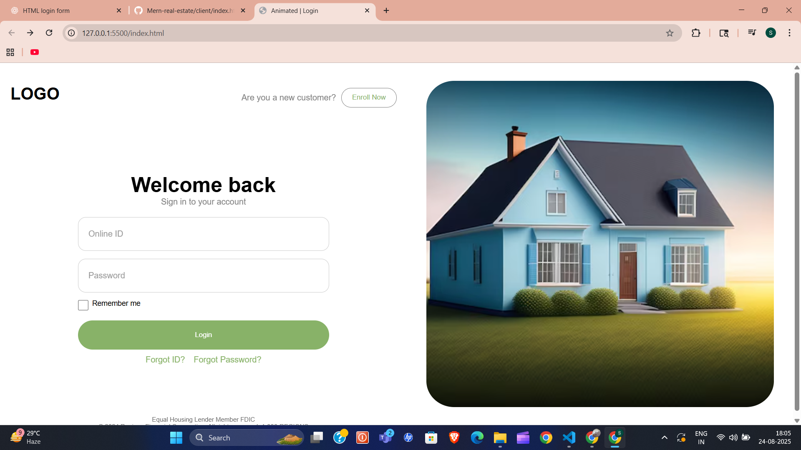

🌟 Animated Login Page
A modern and responsive login page built using HTML, CSS, and Vanilla JavaScript.
It includes smooth animations, interactive form validation, loading animations, and a responsive layout.

(Replace with your own screenshot / GIF demo of the project)
✨ Features
- 🎨 Smooth Animations – Logo transitions, sliding forms, and fade-in effects.
- 🔑 Interactive Login Form – Floating labels, password visibility toggle, and "Remember Me" option.
- ⏳ Loading Animation – Animated spinner on login button.
- 🖼 Responsive Layout – Works seamlessly across desktop & mobile devices.
- 📂 Enroll Dropdown – Hover-based dropdown with enrollment details.
- 🔗 Forgot ID & Password Links – Redirect to respective pages.
🛠️ Tech Stack
- HTML5 – Semantic markup
- CSS3 – Flexbox, animations, transitions, responsive media queries
- Vanilla JavaScript (ES6) – DOM manipulation, event handling, form validation
🚀 Getting Started
1️⃣ Clone the repo
git clone https://github.com/your-username/animated-login.git